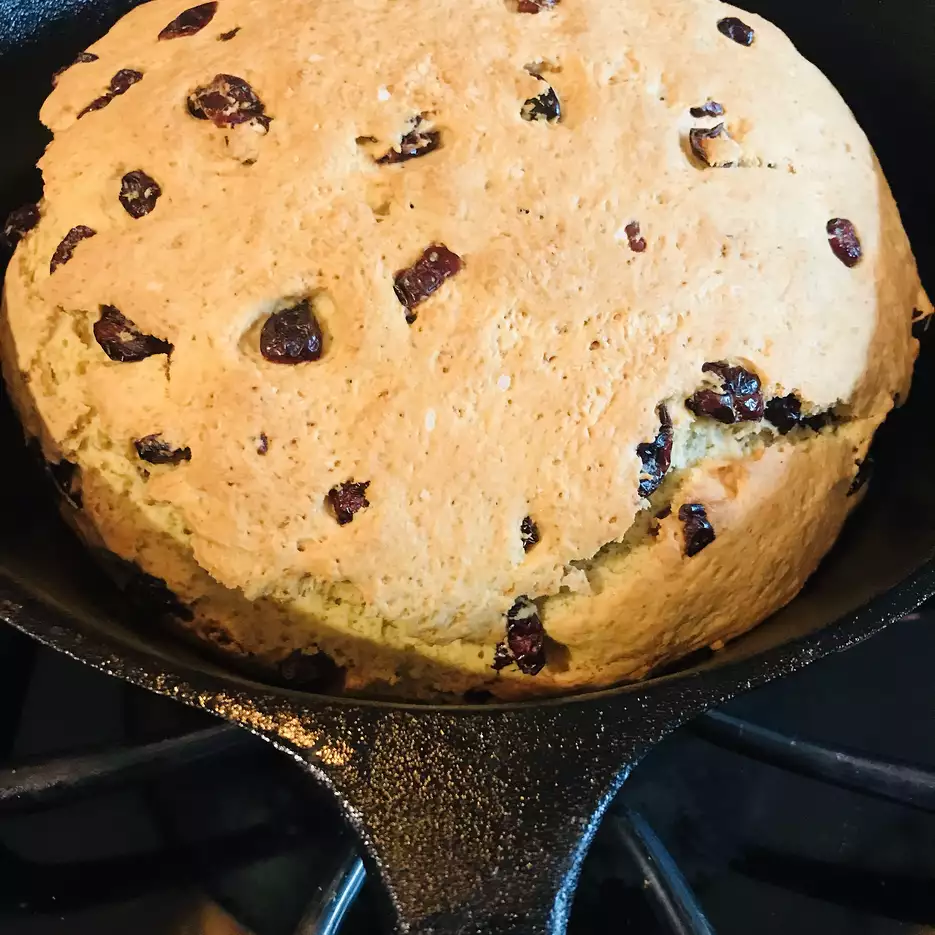

Irish Soda Bread Recipe

Best Ever Irish Soda Bread
A moist, cake-like Irish Soda Bread that's not just for St. Paddy's Day... it's so easy and sooo delicious you'll be craving it all year 'round.
Ingredients
- 4 cups all-purpose flour
- 3/4 cup white sugar
- 1 teaspoon salt
- 1 teaspoon baking powder
- 1 teaspoon baking soda
Steps
- Preheat oven to 350 degrees F (175 degrees C). Grease a 9-inch cake pan.
- Stir together the flour, sugar, salt, baking powder, and baking soda in a large bowl. Using a pastry cutter, cut the butter gently into the flour mixture until well combined, and stir in the raisins. In another bowl, whisk the buttermilk and eggs together; lightly beat the buttermilk mixture into the flour mixture. Place the dough into the prepared cake pan.
- Bake in the preheated oven until the bread has risen and the top is golden brown, 45 minutes to 1 hour. A knife inserted into the center of the bread should come out clean. Cool the bread in the pan on a wire rack for 10 minutes before removing. Serve warm.